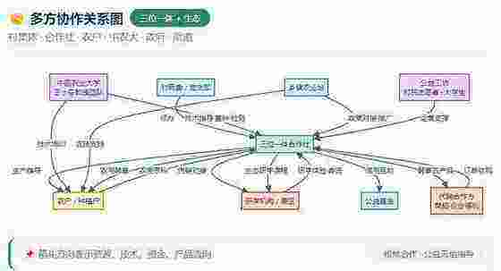

农废归集
回收残次果、果皮与秸秆，减少露天堆放和资源浪费。
以村级工坊为枢纽，把原料、技术、种植、产品和研学串成一条清晰的价值链。
回收残次果、果皮与秸秆，减少露天堆放和资源浪费。
通过规范配比和过程管理，形成稳定的农用酵素体系。
服务土壤养护、作物长势调控与绿色生产。
培育番茄、玉米、大米等可追溯的本地农产品。
开发饮品、植物基冰淇淋和生态伴手礼。
支持农户增收、工坊运维、乡村研学与生态治理。
三阶段发酵把农业副产物转化为服务种植的生态资源。

突出新鲜番茄、清爽口感和乡村打卡属性，连接研学、景区和本地零售场景。
以大豆为植物基底，融入玉米和大米，形成具有地域识别度的甜品。


围绕示范田、酵素工坊、农产品设计、研学课程和数字传播持续共建。